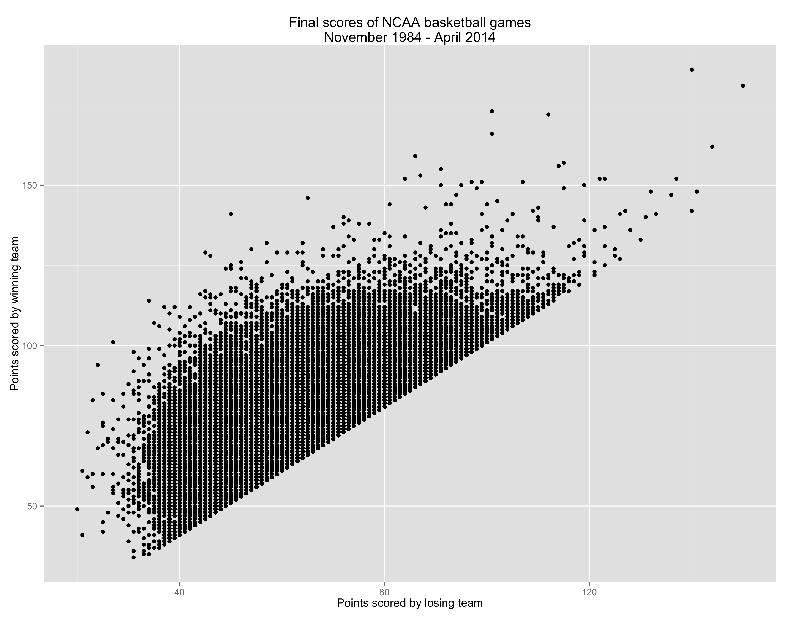
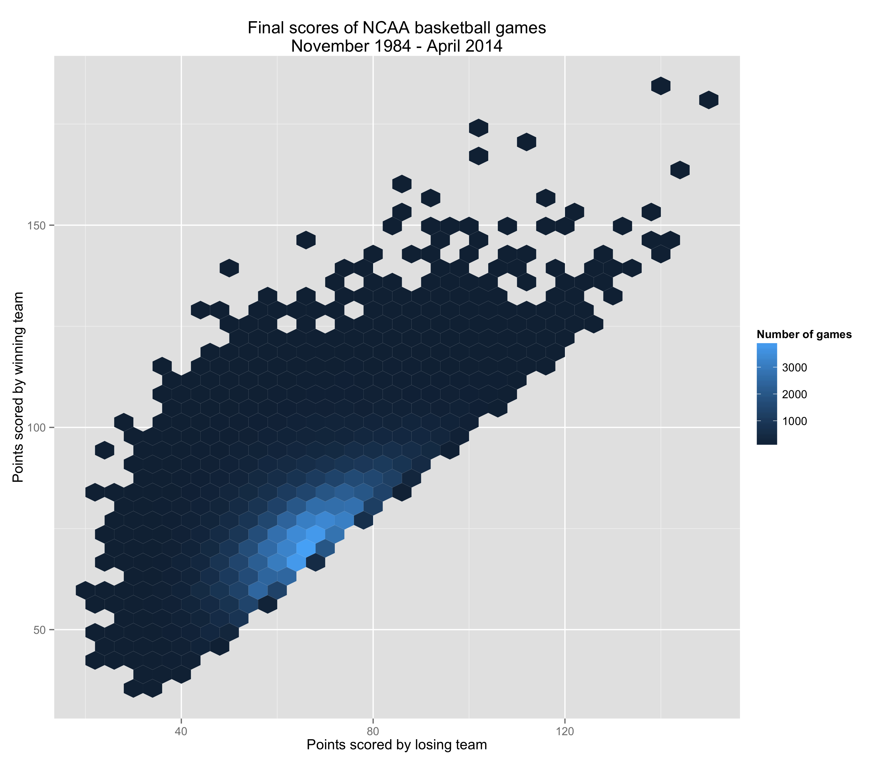

Tidy data [1] (reshape2 \(\rightarrow\) tidyr)
- Each variable forms a column.
- Each observation forms a row.
- Each type of observational unit forms a table.


Sara E. Moore
24 February 2015
You have:
ggplot2 (such as what was presented during the 2013 or 2014 UC Berkeley SCF/D-Lab R Bootcamp),ggplot?ggplot?lattice is better at trellis graphs?reshape2 \(\rightarrow\) tidyr)
"Good grammar is just the first step in creating a good sentence."
Wickham, 2010
Specify a statistical graphic using components of statements:
data),stat: identity, count, mean, etc.),geom: points, lines, etc.),aes: color, shape, size, transparency, etc.),coord: cartesian, polar, map, etc.),scale, guide, and others: axes, log-transformed scales, legends, etc.), facet), position, theme, etc.), andggplot commandggplot, set graph defaults.data).ggplot(data=, aes(x=,y=,...)) +
geom_????(...) +
...
ggplot() +
geom_????(data=, aes(x=,y=,...),...) +
...
source(paste("assets","load_clean_marchmania2015.R", sep=.Platform[["file.sep"]]))
# change this path to the location of your CSVs downloaded from kaggle
# note that required packages will be installed automatically
ncaa.basketball = load.clean.ncaa("~/Dropbox/kaggle/marchmania2015")
library(ggplot2)
ggplot(data=ncaa.basketball[["games"]], aes(x=lscore, y=wscore)) +
geom_point() +
xlab("Points scored by losing team") +
ylab("Points scored by winning team") +
ggtitle("Final scores of NCAA basketball games\nNovember 1984 - April 2014")

ggplot(data=ncaa.basketball[["games"]], aes(x=lscore, y=wscore)) +
# default is bins=c(30,30)
# can use scalar when no. of bins for x and y are same.
# here alternatively specifying binwidth:
stat_binhex(binwidth=c(4, 4)) +
scale_fill_gradient("Number of games") +
xlab("Points scored by losing team") +
ylab("Points scored by winning team") +
ggtitle("Final scores of NCAA basketball games\nNovember 1984 - April 2014")

ggplot(data=ncaa.basketball[["games"]], aes(x=lscore, y=wscore)) +
# default is bins=c(30,30) or just 30 since no. of bins for x and y are same.
# here alternatively specifying binwidth:
geom_hex(stat = "binhex", binwidth=c(4,4)) +
scale_fill_gradient("Number of games") +
xlab("Points scored by losing team") +
ylab("Points scored by winning team") +
ggtitle("Final scores of NCAA basketball games\nNovember 1984 - April 2014")
| geom | stat | modifiable defaults |
|---|---|---|
geom_boxplot() |
stat_boxplot() |
max length of whiskers (beyond hinges) = 1.5*IQR |
geom_bar() |
stat_bin() |
30 bins: binwidth = [range of x]/30 |
geom_histogram() |
stat_bin() |
30 bins: binwidth = [range of x]/30 |
geom_freqpoly() |
stat_bin() |
30 bins: binwidth = [range of x]/30 |
geom_dotplot() |
stat_bindot() |
30 bins: binwidth = [range of x]/30; "dotdensity" method |
geom_bin2d() |
stat_bin2d() |
30 bins for each of x and y |
geom_hex() |
stat_binhex() |
30 bins for each of x and y (calls hexbin::hexBin()) |
geom_density2d() |
stat_density2d() |
Gaussian kernel; bandwidths (x and y) set by Silverman's "rule of thumb"; 100 grid points for x and y (calls MASS::kde2d()) |
geom_density() |
stat_density() |
Gaussian kernel; bandwidth set by Silverman's "rule of thumb" (calls stats::density()) |
geom_violin() |
stat_ydensity() |
Gaussian kernel; bandwidth set by Silverman's "rule of thumb" (calls stats::density()); all violins have same area before trimming tails, tails are trimmed to [range of y] |
geom_smooth() |
stat_smooth() |
if n<1000, stats::loess() with polynomial degree 2, \(\alpha=0.75\), etc.; else, gam::gam() with penalized cubic regression splines, etc.; 80 evaluation points |
geom_quantile() |
stat_quantile() |
3 quartiles; "br" method (modified Barrodale & Roberts method; calls quantreg::rq()) |
geom_contour() |
stat_contour() |
10 pretty breakpoints that cover the [range of z] |
ggplot transformations (excluding identity)stat_ecdf: Empirical Cumulative Density Functionstat_function: Superimpose a function.stat_qq: Calculation for quantile-quantile plot.stat_spoke: Convert angle and radius to xend and yend.stat_sum: Sum unique values. Useful for overplotting on scatterplots.stat_summary: Summarise y values at every unique x.stat_summary_hex: Apply funciton for 2D hexagonal bins.stat_summary2d: Apply function for 2D rectangular bins.stat_unique: Remove duplicates.library(dplyr) # new and way faster than plyr
ncaa.basketball[["team.regseason.summ"]] =
subset(ncaa.basketball[["teams"]],
game.type=="Regular Season") %>%
group_by(team.name,season) %>%
summarise(win.pct = mean(result=="Win"),
points.avg = mean(score),
mov.avg = mean(score-opp.score), # margin of victory
fg.pct.avg = mean(fgm/fga), # field goals
fg3.pct.avg = mean(fgm3/fga3), # three pointers
ft.pct.avg = mean(ftm/fta), # free throws
rebound.avg = mean(or+dr))
ncaa.basketball[["team.season.seed"]] =
subset(ncaa.basketball[["teams"]], game.type=="Tournament") %>%
group_by(team.name,season) %>%
summarise(tourney.seed = unique(seed))
ncaa.basketball[["team.season.summ"]] = left_join(
ncaa.basketball[["team.regseason.summ"]],
ncaa.basketball[["team.season.seed"]],
by = c("team.name","season"))
geom_tileggplotggplot2
googleVis (Flash)library(googleVis)
# data.frame with >=4 cols: x, y, id, time. color and size optional
mc = gvisMotionChart(ncaa.basketball[["team.season.summ"]],
idvar="team.name", timevar="season",
xvar="win.pct", yvar="tourney.seed",
options=list(width=750, height=650))
# plot(mc)
print(mc, 'chart')
[1] L. Wilkinson. The Grammar of Graphics. Springer-Verlag New
York, 2005. DOI: 10.1007/0-387-28695-0.
[2] H. Wickham. ggplot2. Springer Science + Business Media,
2009. DOI: 10.1007/978-0-387-98141-3.
[3] H. Wickham. "A Layered Grammar of Graphics". In: Journal of
Computational and Graphical Statistics 19.1 (2010), pp. 3-28.
DOI: 10.1198/jcgs.2009.07098.
[4] H. Wickham. "Tidy Data". In: Journal of Statistical Software
59.10 (2014).
/
#